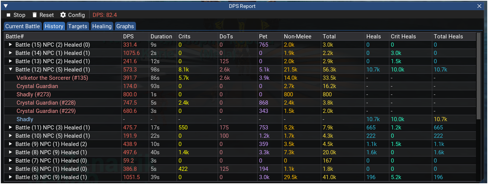
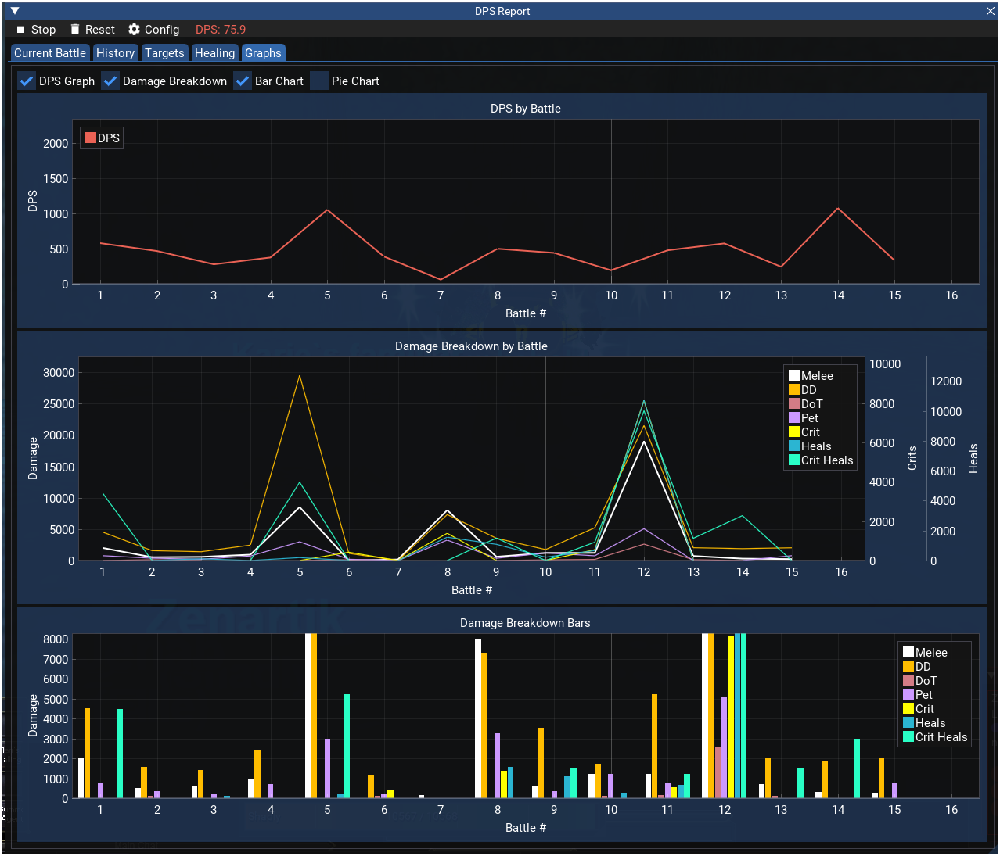

Last Updated: 2026-06-07
MQMyDPS Developer Documentation
MQMyDPS is a native C++ MacroQuest plugin for personal DPS and healing tracking with per-spawn damage attribution. It was rewritten from Lua to take advantage of synchronous chat processing in the C++ plugin API.
Core Challenge
EverQuest chat lines contain no spawn IDs. Damage messages reference targets by name only, and multiple mobs can share the same name. The original Lua implementation used event callbacks with inherent timing issues—events could fire out of order or be delayed by frame processing. The C++ OnIncomingChat hook is synchronous: every chat line is parsed in the order it arrives, before the next line can fire, eliminating race conditions and enabling reliable spawn ID resolution through a multi-strategy chain.
Features
- Real-time combat spam overlay (color-coded, click-through, font scaling)
- Battle tracking with configurable end delay
- Per-spawn damage attribution (6-strategy resolution chain)
- Pet and non-melee damage breakdown
- Healing tracking per player with pie chart
- Battle history (13-column table, hideable/reorderable columns, expandable rows)
- Color-coded UI (25 configurable color keys)
- Graphs: 3 toggleable chart types (DPS line, damage breakdown bar chart, pie chart), scrollable 50-battle window
- MQMyChat integration (optional)
- FCT: bone-anchored 3D floating numbers, configurable bone per spawn type, pop/float/fade animation, per-type icons
- 11 themes
- TLO API:
${MyDPS.DPS},${MyDPS.Target[id].TotalDamage} - Per-character INI settings
- Blech B-tree pattern matching with user-editable per-server JSON patterns
- In-game pattern editor (Patterns tab) with hot reload
- Cross-character DPS sharing (post office actors + protobuf): Peers tab with Live/History/Graphs, peer live-meter, All/Server/Group/Raid filter
- Tab pop-out: any main-window tab can be detached into its own window
- Icon picker dialog for choosing FCT spell/item icons
- Styled/animated UI chrome (imanim): pill tabs, animated checkboxes/sliders/combos, collapsing header — shared
Widgets.{h,cpp}across the MQMy* suite
Screenshots




Source File Structure
| File | Purpose |
|---|---|
MQMyDPS.cpp | Plugin entry, MyDPSEngine implementation, combat state, spawn resolution, DoT tracking, MQMyChat, INI settings, commands |
MQMyDPS.h | MyDPSEngine class declaration |
MyDPSData.h | Data structures, DamageType enum, DamageRecord, TargetDamageData, HealTargetData, BattleData, MyDPSSettings, FormatNumber utility, named FCT icon constants |
MyDPSPatternEngine.cpp/h | Blech-based chat parser: user-editable patterns from per-server JSON, named captures, typed builder callbacks |
json.hpp | nlohmann/json v3.12.0 (header-only) for pattern file I/O |
MyDPSActors.cpp/h | Cross-character sharing: post office actor on the mydps mailbox, peer cache, filter modes, stale pruning |
MyChatAPI.h | Declares the MQMyChat ChatAPI plugin interface + GetChatAPI() accessor |
Proto/mydps.proto (+ .pb.cc/.pb.h) | Protobuf schema for peer messages (LiveSnapshot, SessionStats, FinalizedBattle, MyDPSEnvelope) and its generated C++ |
MyDPSRenderer.cpp/h | ImGui rendering: main window (6 tabs), config, ImPlot graphs, Peers tab, tab pop-out, icon picker; UI chrome via myui::* styled widgets |
Widgets.cpp/h | Styled/animated imanim widget set (namespace myui), copied from MQMyUI Core/Widgets — see Styled Widgets |
MyDPSFloatingText.h | Header-only FCT: bone-anchored 3D projection, ring buffer, arc spread, 28 configurable bones |
MyDPSTLO.cpp/h | TLO: ${MyDPS} with spawn ID/name lookup |
Theme.h | 11 ImGui themes; DrawThemePicker uses myui::StyledCombo |
Key Dependencies
| Dependency | Usage |
|---|---|
| MQ2Main | Plugin API, chat hooks, commands, TLO, spawn data, GetCombatState(), IsPluginLoaded(), GetPluginInterface() |
| ImGui | UI rendering, tables, tabs, menu bars, font scaling |
| ImPlot | DPS line graphs, damage bar charts, pie charts |
| fmt | String formatting, number abbreviation |
| Blech | B-tree chat pattern matching (bundled with MQ) |
| nlohmann/json | JSON parsing for pattern files (json.hpp, header-only, bundled) |
| protobuf | Wire format for cross-character peer messages (Proto/mydps.proto) |
| post office (mq::postoffice) | Actor mailbox transport for peer sharing |
| eqlib | Game structs, graphics headers for FCT bone projection |
| MQMyChat (optional) | Channel-based chat routing, detected at runtime |